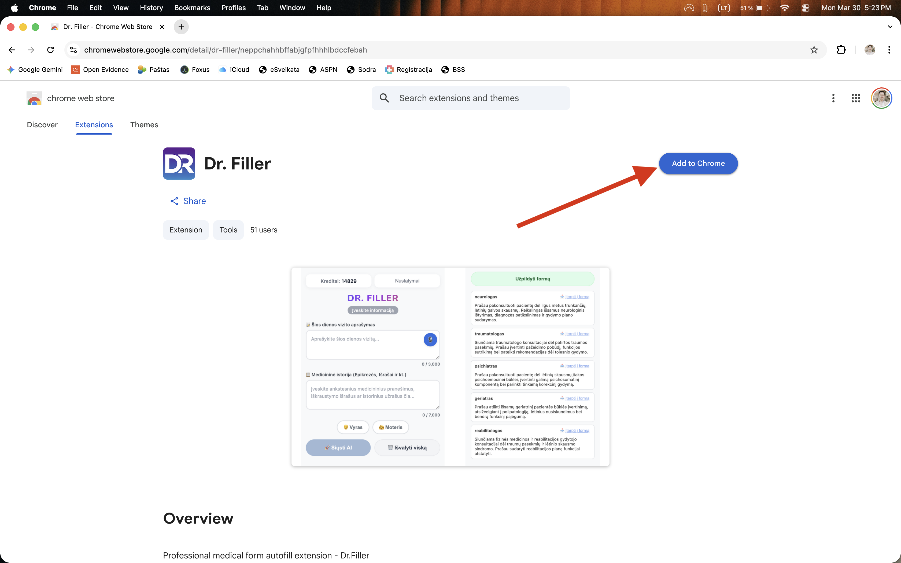
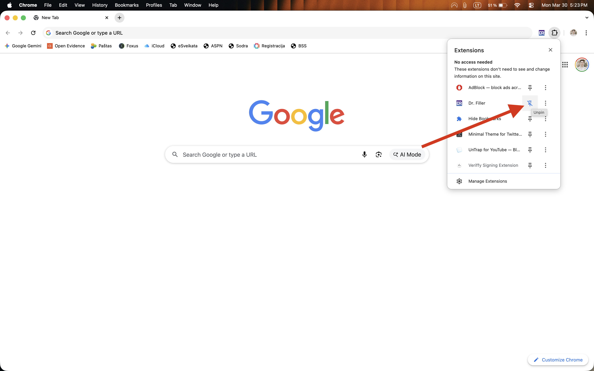
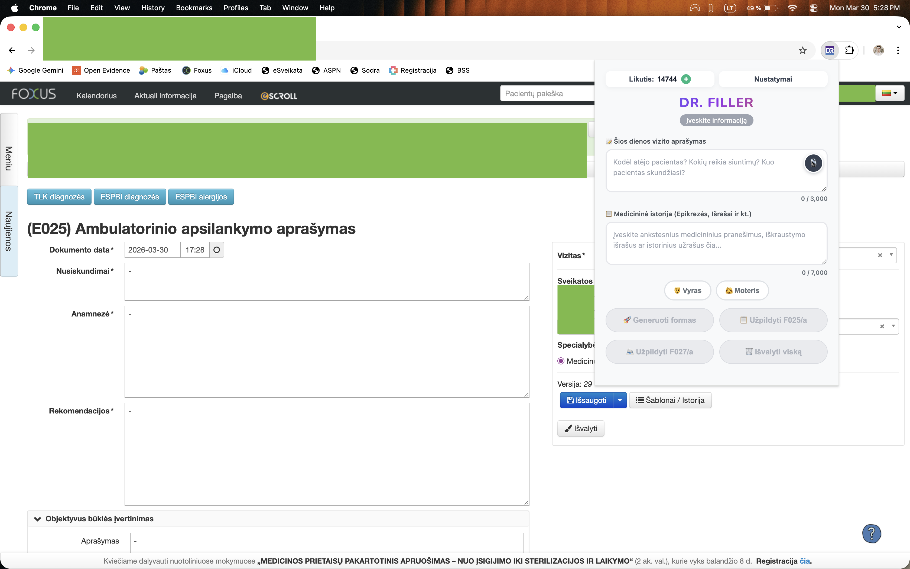

1 žingsnis
Atsisiųsti
Įsidiekite Dr. Filler kaip naršyklės plėtinį, kad jis būtų pasiekiamas jūsų kasdienėje darbo aplinkoje.
Dr. Filler yra naršyklės plėtinys, kuris padeda greičiau užpildyti vizito informaciją — sumažina pasikartojančią administracinę naštą ir leidžia susitelkti į svarbiausius sprendimus.

Įsidiekite Dr. Filler kaip naršyklės plėtinį, kad jis būtų pasiekiamas jūsų kasdienėje darbo aplinkoje.

Prisekite plėtinį prie naršyklės juostos, kad galėtumėte jį atsidaryti vienu paspaudimu.
Susikurkite paskyrą ir prisijunkite, kad galėtumėte naudotis funkcijomis bei nustatymais.

Atidarykite Dr. Filler konsultacijos metu ir leiskite jam padėti struktūruoti bei įvesti informaciją greičiau.